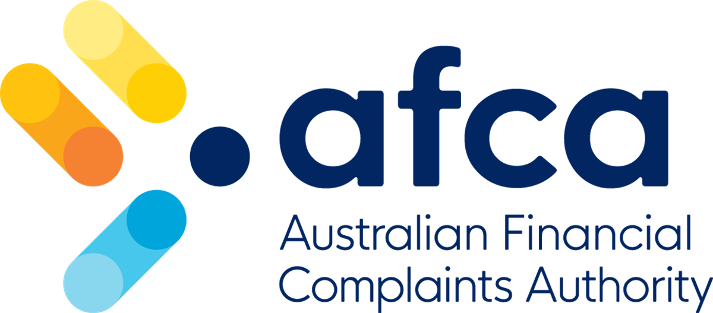
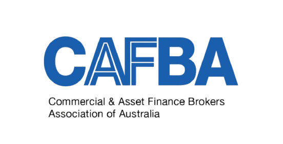
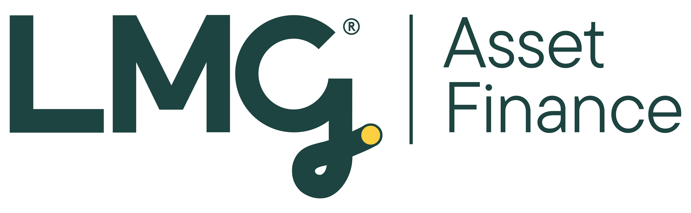

Finro Asset Finance Pty Ltd is a specialist asset finance brokerage supporting Australian businesses with tailored funding solutions across a broad range of asset classes and industries.
As a business owner-led organisation, we understand the commercial realities that decision-makers face - capital allocation, cash flow discipline, lender requirements, and risk management. This perspective enables us to deliver advice that is commercially practical, financially sound, and aligned with real-world operating environments.
Our role is to simplify complex funding decisions by structuring finance solutions that support operational performance, tax efficiency, and long-term growth objectives. Through established relationships with a wide panel of banks and specialist lenders, we are able to access diverse credit policies and funding structures - ensuring each solution is appropriately matched to your business profile and asset strategy.
Every engagement is guided by disciplined analysis, transparent communication, and a commitment to achieving the most appropriate funding outcome for each client.
If your business requires asset funding that protects working capital, preserves flexibility, and supports strategic growth, Finro Asset Finance Pty Ltd provides the expertise and execution capability to deliver with confidence.
Decades of combined experience in banking, asset finance, and commercial lending - working for you. Our leadership team brings institutional knowledge, deep lender relationships, and a genuine commitment to your business success.



Our professional memberships and accreditations reflect our commitment to regulatory compliance, ethical conduct, and industry best practice. These affiliations ensure that our operations align with recognised governance standards, consumer protection frameworks, and lender accreditation requirements - reinforcing confidence, accountability, and transparency across every client engagement.